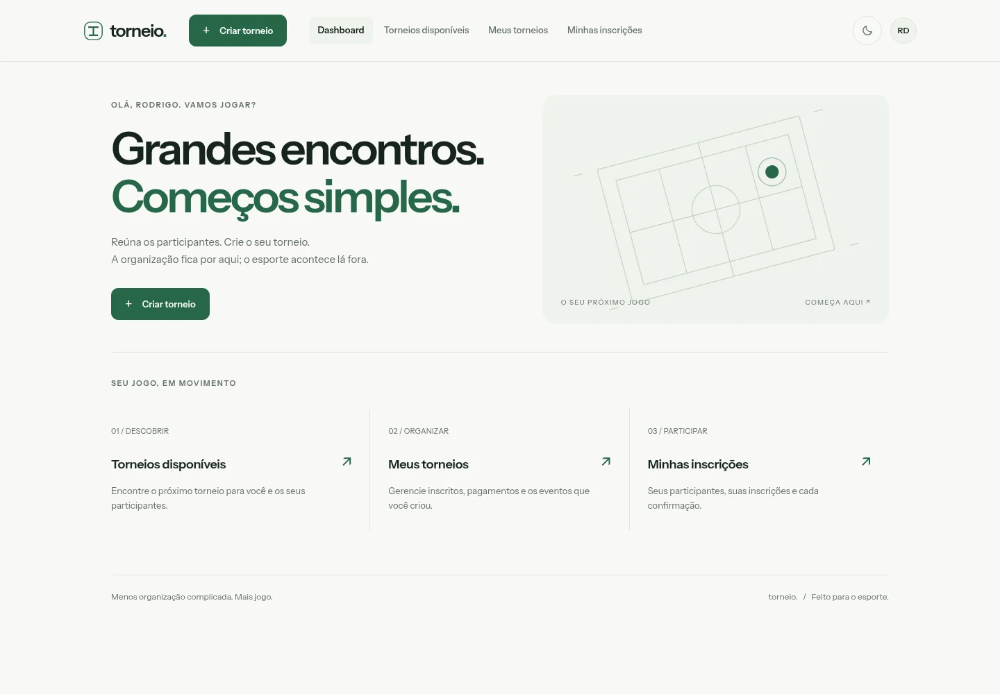
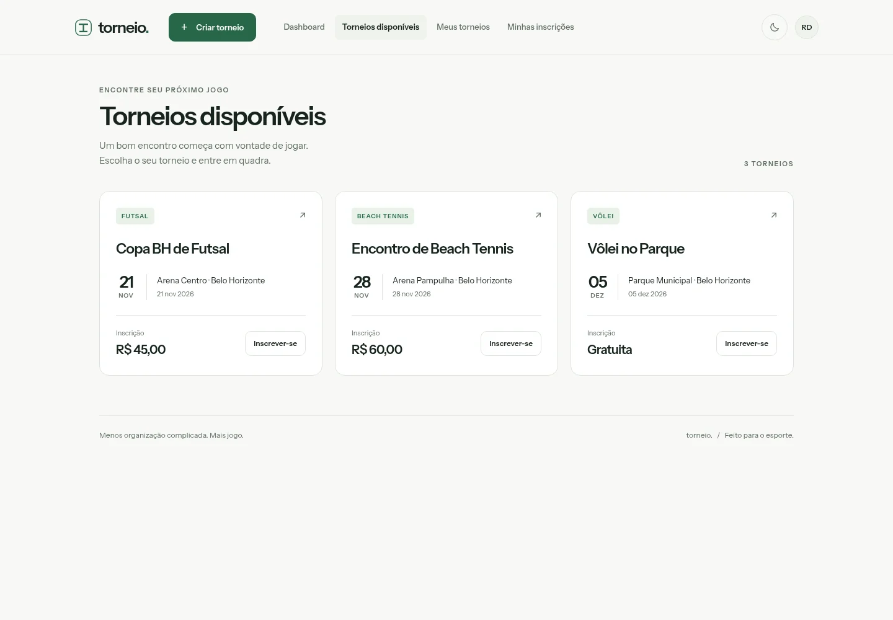
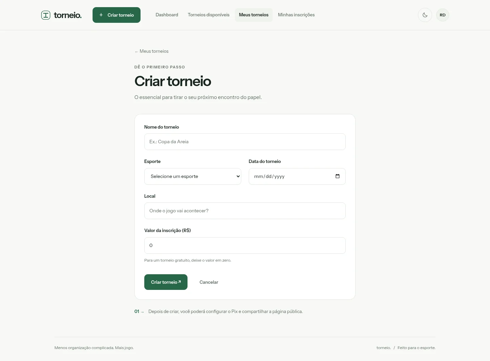
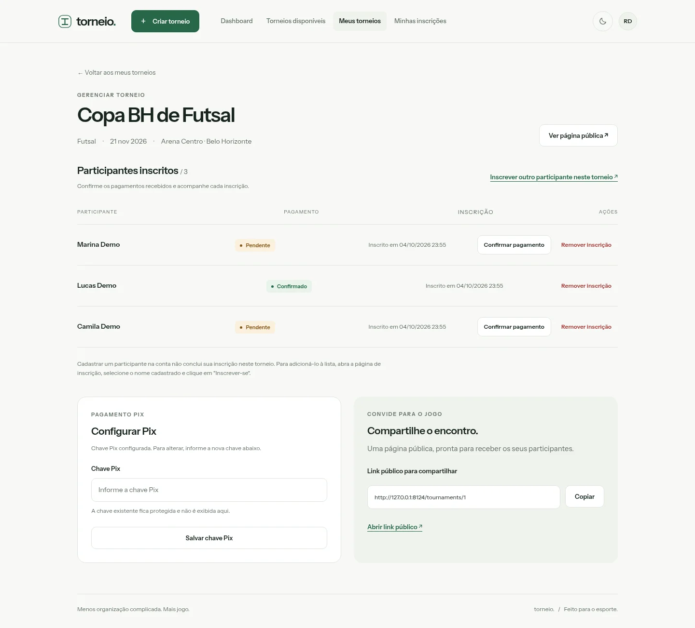
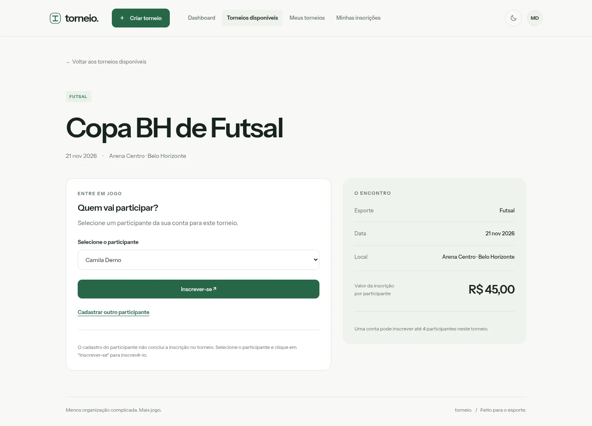
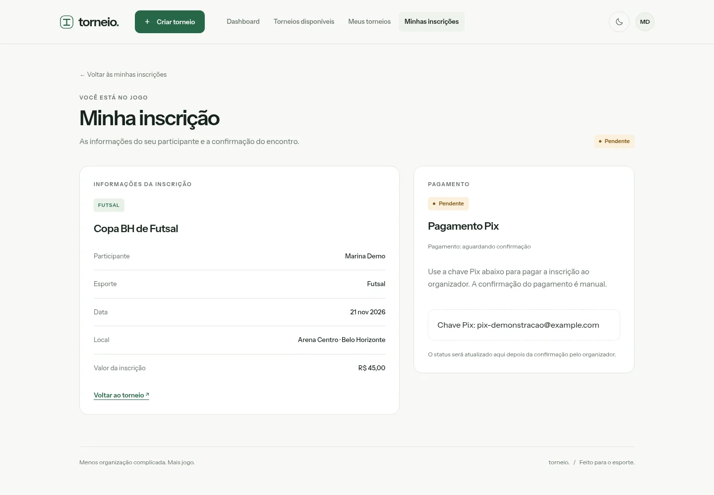
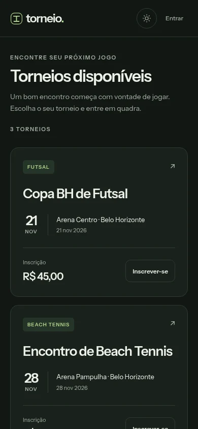

Seu torneio, sob controle.
Crie eventos com esporte, data, local e valor da inscrição. Compartilhe a página pública, acompanhe os inscritos e gerencie cada participação.
Sistema web / Esporte
Mais jogo.
Menos complicação.
Desenvolvi um sistema para reunir organizadores e participantes em um só lugar: da criação do torneio à inscrição, com acompanhamento dos pagamentos Pix.

Do encontro à confirmação
Crie eventos com esporte, data, local e valor da inscrição. Compartilhe a página pública, acompanhe os inscritos e gerencie cada participação.
Encontre torneios e cadastre quem vai competir. Cada conta pode inscrever até quatro participantes por torneio, com acompanhamento das próprias inscrições.
Consulte as instruções de pagamento na área privada. O organizador confere o recebimento e confirma manualmente; torneios gratuitos têm confirmação automática.
Por dentro da aplicação
Selecione uma tela para ampliar.
Capturas reais com dados fictícios.
Acesso rápido à criação de eventos, aos torneios disponíveis e às inscrições da conta.

Consulte os eventos disponíveis e veja a modalidade, a data, o local e o valor antes de se inscrever.

O organizador cadastra os dados do torneio e define se a participação será gratuita ou paga.

Acompanhe participantes, confirme pagamentos, remova inscrições e compartilhe o link público do evento.

Selecione um participante cadastrado na sua conta ou adicione outro antes de concluir a inscrição.

A área privada apresenta os dados da inscrição e as instruções Pix enquanto aguarda a confirmação manual.
A experiência acompanha você
A interface se adapta ao celular com uma navegação inferior para as principais áreas. Os temas claro e escuro permitem escolher a aparência da aplicação.
Login e cadastro de conta, verificação de e-mail e acesso restrito aos dados de cada organizador e participante fazem parte do sistema.

Explore o projeto
O código completo está no GitHub. Para experimentar o sistema, instale o projeto localmente seguindo o guia do repositório.
Requisitos: PHP 8.4.1+, Composer 2 e uma versão do Node.js compatível com o projeto. O guia detalha versões, extensões e configuração do banco.
Clone o repositório, instale as dependências e configure o ambiente. SQLite permite começar localmente; PostgreSQL também é suportado.
git clone https://github.com/Rodrigogbhs/torneioapp.git
cd torneioapp
composer install
npm ci
cp .env.example .env
php artisan key:generate
touch database/database.sqlite
php artisan migrate
npm run build
composer run devAbra http://localhost:8000, ou o endereço informado pelo servidor, e cadastre sua conta. No ambiente local, com MAIL_MAILER=log, o link de confirmação aparece em storage/logs/laravel.log.
Use Criar torneio para organizar um evento. Para participar, abra Torneios disponíveis, escolha um torneio, cadastre o participante e conclua a inscrição.